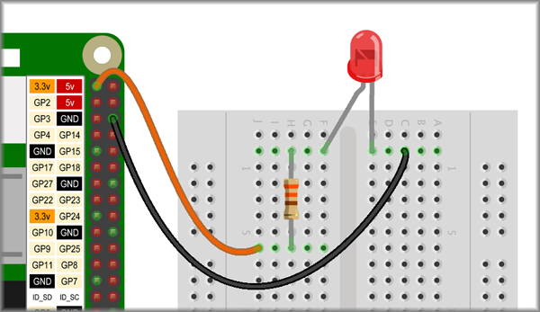

<!DOCTYPE html>
<html lang="en">
  <head>
    <meta charset="UTF-8" />
    <meta name="viewport" content="width=device-width, initial-scale=1.0" />

    <!--==================== UNICONS ====================-->
    <link
      rel="stylesheet"
      href="https://unicons.iconscout.com/release/v4.0.0/css/line.css"
    />

    <!--==================== SWIPER CSS ====================-->
    <link rel="stylesheet" href="../css/swiper-bundle.min.css" />

    <!--==================== CSS ====================-->
    <link rel="stylesheet" href="../css/styles.css" />

    <title>Responsive Portfolio Website</title>
  </head>

  <body>
    <!--==================== HEADER ====================-->
    <header class="header" id="header">
      <nav class="nav container">
        <a href="#" class="nav__logo">IoT</a>

        <div class="nav__menu" id="nav-menu">
          <ul class="nav__list grid">
            <li class="nav__item">
              <a href="../../index.html" class="nav__link active-link">
                <i class="uil uil-estate nav__icon"></i>Home
              </a>
            </li>
            <li class="nav__item">
              <a href="#" class="nav__link">
                <i class="uil uil-user nav__icon"></i>Experiments
              </a>
            </li>
            <li class="nav__item">
              <a href="#skills" class="nav__link">
                <i class="uil uil-file-alt nav__icon"></i>Rapsberry pi
              </a>
            </li>
            <li class="nav__item">
              <a href="./about.html" class="nav__link">
                <i class="uil uil-briefcase nav__icon"></i>About
              </a>
            </li>
            <!-- <li class="nav__item">
                        <a href="#portfolio" class="nav__link">
                            <i class="uil uil-scenery nav__icon"></i>Portfolio
                        </a>
                    </li>
                    <li class="nav__item">
                        <a href="#contact" class="nav__link">
                            <i class="uil uil-message nav__icon"></i>Contact
                        </a>
                    </li> -->
          </ul>
          <i class="uil uil-times nav__close" id="nav-close"></i>
        </div>

        <div class="nav__btns">
          <!-- Theme change button -->

          <i class="uil uil-moon change-theme" id="theme-button"></i>

          <div class="nav__toggle" id="nav-toggle">
            <i class="uil uil-apps"> </i>
          </div>
        </div>
      </nav>
    </header>

    <!--==================== MAIN ====================-->
    <main class="main">
      <section class="project section">
        <div class="project__bg">
          <div class="project__container container grid">
            <div class="project__data">
              <h1 class="project__title">
                To Interface general purpose I/O devices like LED’s, switches.
              </h1>
              <p class="project__description">
                Software/Components required:-<br />
                Solderless breadboard , female-to-male jumper wires ,Maleto-male
                jumper wires ,2 × red
              </p>
              <p class="project__description">
                LEDs. Theory:- <br />Building our circuit To build our physical
                circuit, start by inserting components into our breadboard.
                Referring to our diagram from before, we can see that some of
                the holes are green. This indicates continuity in the circuit.
                For example, we connect the negative leg of the LED to the 330
                Ohm resistor through the same vertical column. Thus, the two
                component legs are connected through the breadboard. We take
                this into account as we start to place our components on the
                breadboard: <br />1. Insert the LED into our breadboard, as
                shown in the preceding picture. We are following our Fritzing
                diagram and have the positive leg in the lower hole.<br />
                2. Follow our Fritzing diagram and wire up the 330 Ohm resistor.
                Using femaleto-male jumper wires, connect the Raspberry Pi to
                our breadboard. <br />3. Refer to our Raspberry Pi GPIO diagram
                to find GPIO 18 and GND on the Raspberry Pi board.
              </p>
              <div class="exp_img">
                
              </div>

              <p class="project__description">
                Procedure:- <br />1.Place the components onto a breadboard Using
                Figure 1 as a reference, push the component legs into the
                breadboard at the positions shown. Bend the resistor legs so
                that they fit into the holes. <br />
                2.Connect breadboard to Raspberry Pi Again, using Figure 1 as a
                reference, connect the GPIO pins on the Raspberry Pi to the
                breadboard.<br />
                3.Running the program <br />■ Create a new file in Thonny, and
                call it Hello LED.py or something similar. <br />■ Type in the
                following code and run it: from gpiozero import LED led =
                LED(18) led.blink(1,1,10) <br />Blink LED using gpiozero If we
                wired up our circuit and typed in our code correctly, we should
                see our LED blink for 10 seconds in 1 second intervals. The
                blink function in the gpiozero LED object allows us to set
                on_time (the length of time in seconds that the LED stays on),
                off time (the length of time in seconds that the LED is turned
                off for), n or the number of times the LED blinks, and
                background (set to True to allow other code to run while the LED
                is flashing). The blink function call with its default
                parameters looks like this: blink(on_time=1, off time=1, n=none,
                background=True) Without parameters passed into the function,
                the LED will blink non-stop at 1 second intervals. Notice how we
                do not need to import the time library like we did when we used
                the RPi.GPIO package for accessing the GPIO. We simply pass a
                number into the blink function to represent the time in seconds
                we want the LED on or off.
              </p>

              <h2 class="exp_h2">Controls for LED</h2>
              <a
                href="#contact"
                class="exp_button button button--flex button--white"
                >ON</a
              >
              <a
                href="#contact"
                class="exp_button button button--flex button--white"
                >OFF</a
              >
              <!-- <i class="uil uil-message project__icon button__icon"></i> -->
            </div>

            <!--  -->
          </div>
        </div>
      </section>
    </main>

    <!--==================== FOOTER ====================-->

    <!--==================== SCROLL TOP ====================-->
    <a href="#" class="scrollup" id="scroll-up">
      <i class="uil uil-arrow-up scrollup__icon"></i>
    </a>

    <!--==================== SWIPER JS ====================-->
    <script src="../js/swiper-bundle.min.js"></script>

    <!--==================== MAIN JS ====================-->
    <script src="../js/main.js"></script>
  </body>
</html>
